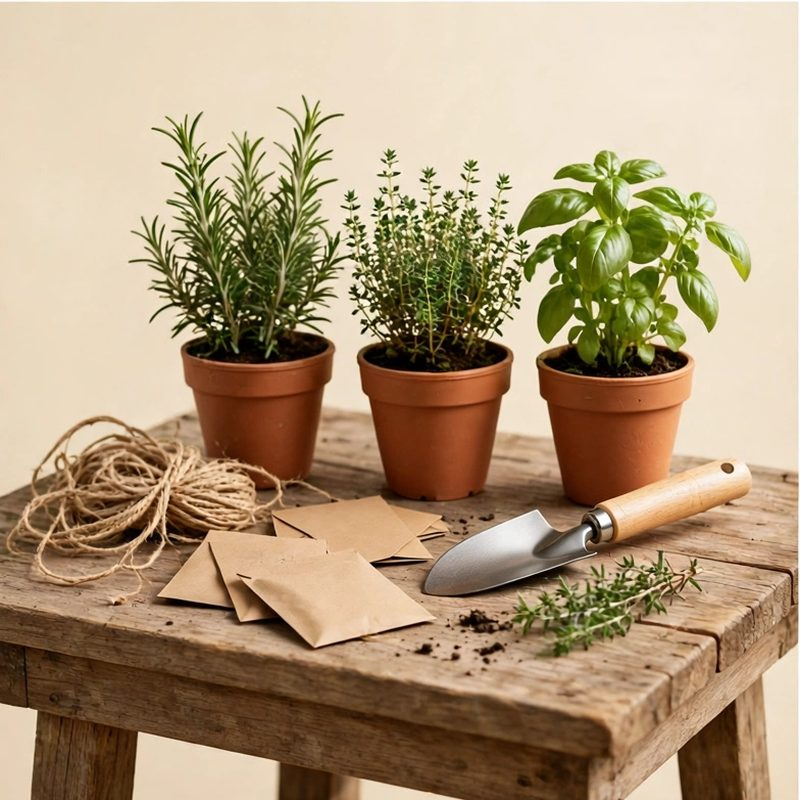

Gifts Under $25
For a small budget that still has to feel big. Every idea here sits in the under $25 band.
These ideas come from the same bank as the picker. Each one is plain and useful, with no store links and no brand names. Stores set real prices, so check the tag when you buy.
Find their gift
Free forever. No ads. No accounts.
Cooking

Pour-over coffee dripper with paper filters
Slow weekend coffee with no machine on the counter.
Why this fitsFor the ritual of a slow morning, not another gadget.
Buying notesLook for: a dripper that fits standard filters and drips slow and steady. Avoid: odd sizes that need special filters.
Small-batch hot sauce trio
Three bottles with the heat levels labeled and tasting notes on the box.
Why this fitsA low-stakes way to discover a new favorite.
Buying notesLook for: three heat levels, mild to hot, with real peppers named. Avoid: sets that are all extreme heat.
Instant-read digital meat thermometer
Reads in two seconds. No more guessing at the grill.
Why this fitsFor the griller who insists they can tell by touch.
Buying notesLook for: a read in two to three seconds and a thin folding probe. Avoid: slow dial thermometers.
Outdoors

Rechargeable headlamp
Bright, light, and no batteries to keep buying.
Why this fitsFor early starts and late finishes.
Buying notesLook for: USB charging, a tilting head, and a red-light mode. Avoid: dim lamps under 200 lumens.
Merino wool hiking socks, two pairs
No blisters, no stink, warm even when wet.
Why this fitsThe boring gift they will thank you for in February.
Buying notesLook for: at least half merino wool, with cushion in the heel and toe. Avoid: cotton blends that blister.
Trail first-aid kit
Compact, organized, and hopefully never needed.
Why this fitsPractical care for someone you worry about.
Buying notesLook for: bandages, blister care, tweezers, and tape in a dry case. Avoid: kits padded out with cotton balls.
Packable sun hat with chin strap
Wide brim shade that folds flat into a day pack.
Why this fitsLong garden mornings and trail walks stay cool under real shade.
Buying notesLook for: a wide crushable brim, a chin strap for wind, and fabric that dries fast. Avoid: stiff brims that crack when folded.
Tech

Braided fast-charging cable set, 3 pack
Long, short, and car length. They stop stealing yours.
Why this fitsFixes the most-borrowed item in the house.
Buying notesLook for: braided nylon, the right tips for their phone, mixed lengths. Avoid: cables that fray at the ends.
Phone stand with charging dock
A home for the phone that is not the couch cushion.
Why this fitsTidies the nightstand and the desk in one move.
Buying notesLook for: an adjustable angle and a dock that fits their phone case. Avoid: fixed stands that sit bolt upright.
Books

The year's most talked-about hardcover novel
The book everyone will be discussing in January.
Why this fitsA shared topic for your next phone call.
Buying notesLook for: the book everyone is talking about this year, in hardcover. Avoid: book two of a series they have not started.
Clip-on rechargeable book light
Warm light, no batteries, and it does not disturb the other side of the bed.
Why this fitsFor the reader who stays up too late.
Buying notesLook for: warm light with dim levels, a firm clip, USB charging. Avoid: harsh white light that glares.
Reading journal
Track what you read and what you thought, one page per book.
Why this fitsFor the reader who recommends books to everyone.
Buying notesLook for: one page per book, room for notes, and pages that lay flat. Avoid: thin paper and cramped lines.
Fitness

Weighted jump rope
Ten minutes that humbles every cardio machine.
Why this fitsThe smallest serious workout you can own.
Buying notesLook for: adjustable length and handles that spin smooth. Avoid: ropes that kink and tangle.
Massage ball set
Two balls that find the knot the foam roller misses.
Why this fitsDesk-worker shoulders and runner calves, solved.
Buying notesLook for: two balls, one firm and one softer, in a carry pouch. Avoid: hollow balls that crack under weight.
Cozy home

Soy candle trio, seasonal scents
Three small jars that make the house smell like December.
Why this fitsInstant atmosphere with zero effort.
Buying notesLook for: soy wax and cotton wicks, three small jars over one big one. Avoid: heavy scents that fill the whole house.
Microwave heated shoulder and neck wrap
A weighted wrap that warms in minutes and drapes where it aches.
Why this fitsDesk stiff shoulders loosen up during one evening news segment.
Buying notesLook for: even weight, a washable cover, and heat that lasts twenty minutes. Avoid: wraps with a cord that ties them to the couch.
Music

Harmonica with beginner songbook
Fits in a pocket and learnable in an afternoon.
Why this fitsFor the secretly musical.
Buying notesLook for: key of C, ten holes, and a simple songbook. Avoid: toy harmonicas that leak air.
Waterproof shower speaker with big buttons
Steam proof sound with buttons anyone can find half asleep.
Why this fitsMorning playlists and radio voices make short showers cheerful.
Buying notesLook for: real waterproofing, raised buttons, and a hook or suction mount. Avoid: speakers that need a phone in the room to change songs.
Games

1000-piece art jigsaw puzzle
A famous painting, one satisfying piece at a time.
Why this fitsFor slow evenings and the dining table.
Buying notesLook for: a rich image with varied colors and sturdy pieces. Avoid: mostly-sky images that stall halfway.
Premium playing cards, two decks
Plastic-coated and endlessly riffleable.
Why this fitsUpgrades every card night they host.
Buying notesLook for: plastic-coated or full plastic decks, poker size. Avoid: paper decks that warp after one night.
Science

Star wheel and night sky pocket guide
A rotating chart plus a slim guide to constellations and planets.
Why this fitsClear evenings turn into small lessons anyone can lead from the porch.
Buying notesLook for: a chart set for your latitude and print that reads under a porch light. Avoid: glow toys sold as astronomy tools.
Gardening

Heirloom seed collection
Twelve varieties with planting calendars.
Why this fitsSpring, planned in December.
Buying notesLook for: kinds that suit their climate, with planting dates on the packet. Avoid: seeds that need a greenhouse.
Window box herb garden kit
A cedar box, soil discs, and seeds for basil, mint, and chives.
Why this fitsFresh snips for dinner grow right above the kitchen sink.
Buying notesLook for: a box that drains into a tray and seeds dated for this season. Avoid: kits with only decorative flowers.
Travel

Universal travel adapter
One plug for 150 countries.
Why this fitsSmall, boring, and used constantly.
Buying notesLook for: plugs for the US, Europe, the UK, and Australia, with surge protection. Avoid: adapters with loose, wobbly prongs.
Travel organizer with big zipper pulls
Clear pockets for papers, pills, and cords, all easy to open.
Why this fitsGate changes feel calmer when every paper sits in one place.
Buying notesLook for: chunky zipper pulls, clear panels, and a strap for the seat pocket. Avoid: organizers with a dozen tiny slots nobody uses.
Sentimental

Handwritten letter kit
Nice stationery, good pens, and prompts to get started.
Why this fitsFor the person who keeps every card.
Buying notesLook for: thick stationery, smooth pens, and prompt cards. Avoid: thin paper that bleeds ink.
"Reasons I love you" jar
Fifty-two notes, one for each week of the year.
Why this fitsCheesy in the best possible way.
Buying notesLook for: 52 notes you wrote yourself, one for each week. Avoid: pre-written notes that sound like a stranger.
Grandparent story journal with prompts
Prompt pages asking about childhood, work, and first loves.
Why this fitsTheir memories become the family archive.
Buying notesLook for: big print, one prompt per page, and a ribbon marker. Avoid: tiny print and cramped lines.
Memory jar kit with blank cards
A glass jar with blank cards and a pen, ready for small good moments.
Why this fitsFor the one who keeps every card you have ever sent.
Buying notesLook for: a wide mouth jar, thick blank cards, and a pen that will not smear. Avoid: tiny jars that fit ten cards.
Handwritten family recipe book
A blank hardcover book made for writing down family recipes by hand.
Why this fitsFor the dish everyone asks for and nobody else can make.
Buying notesLook for: thick pages that take pen ink, a ribbon marker, and room for notes. Avoid: thin paper that bleeds through.
For kids
Art and craft kit
Paints, brushes, canvases, and washable everything.
Why this fitsFor the maker.
Buying notesLook for: washable paints, thick paper, and brushes that rinse clean. Avoid: kits heavy on glitter.
Three picture books
New favorites, picked for their age.
Why this fitsFor the bedtime routine.
Buying notesLook for: new favorites for their age, with art worth a second look. Avoid: books they already own.
Washable marker and coloring book set
Forty markers and two thick coloring books.
Why this fitsFor quiet afternoons.
Buying notesLook for: truly washable markers and thick coloring pages. Avoid: markers that stain clothes and hands.
Modeling dough 10-pack
Every color, plus cutters and rollers.
Why this fitsFor hands that cannot sit still.
Buying notesLook for: soft dough in ten colors, with cutters and rollers. Avoid: dough that dries out in a week.
No-cook snack making kit for kids
Safe tools, picture recipes, and snacks they plate themselves.
Why this fitsPride tastes better when small hands made it.
Buying notesLook for: picture recipes, safe tools, and pieces that wash easy. Avoid: kits that need a hot stove.
Pocket science kit with magnifier and bug viewer
Magnifier, bug viewer, and field cards for backyard finds.
Why this fitsEvery walk outside becomes a small expedition.
Buying notesLook for: a real glass magnifier and a viewer with air holes. Avoid: flimsy plastic lenses that scratch.
Nature scavenger hunt kit for kids
Picture cards, a magnifier, and a pouch for found treasures.
Why this fitsTurning a plain walk into a hunt keeps small legs moving.
Buying notesLook for: cards with pictures, not just words, and a pouch that belts on. Avoid: kits that need an app to play.
Animal movement card deck for kids
Fifty cards that turn wiggles into bear crawls and frog jumps.
Why this fitsSilly prompts burn energy on rainy afternoons without any screens.
Buying notesLook for: big pictures, moves safe on carpet, and rounds under ten minutes. Avoid: decks that need open floor space like a gym.
Fleece hooded blanket for kids
A soft hooded throw with pockets shaped like paws.
Why this fitsStory time feels warmer when the blanket hugs back.
Buying notesLook for: fleece that washes without pilling and a hood that stays up. Avoid: heavy blankets sized for adults.
Giant sunflower growing kit for kids
Huge seeds, a tall measure chart, and a starter pot.
Why this fitsWatching a stem climb past their own height never gets old.
Buying notesLook for: seeds that sprout fast and a chart marked in kid height steps. Avoid: kits with tiny pots the roots outgrow in a week.
Reusable sticker travel activity pack
Window stickers, maze pages, and a fold out world map.
Why this fitsLong rides pass faster when small hands stay busy creating scenes.
Buying notesLook for: stickers that peel off glass clean and pages thick enough for markers. Avoid: one use sticker books that end in an hour.
Find their gift
Tell the picker who they are and what they are into. Get five picks that fit your budget.
Common questions
Can a gift under $25 still feel thoughtful?
Yes. Small and useful beats big and random. A meat thermometer, a headlamp, or a book light gets used every week. Pick the one that fits how they spend their days.
Will every idea here cost under $25 in a store?
Stores set real prices, and prices change. Every idea here is in the under $25 budget band in the picker. Check the tag when you buy, and pick another idea here if one runs over.
Do you link to stores or sell these gifts?
No. Every idea is described in plain words, with no store links. Search the name anywhere you like to buy it. The site sells nothing, so it has exactly one job: good ideas.